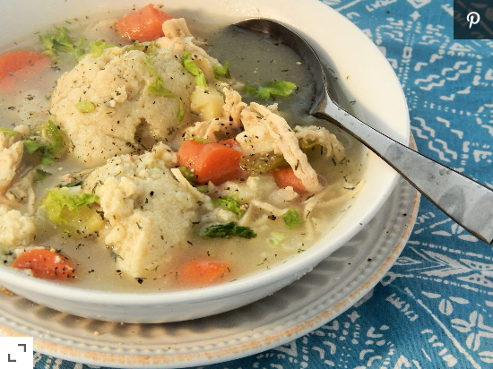

Buby Hearty's Matzo Ball Soup

Description
This old-fashioned matzo ball soup is packed with vegetables, chicken,
and fresh dill to create a hearty, comforting meal.To save time, you
can use a rotisserie chicken
Ingredients
- 1 (3 pound) whole chicken
- 2 (48 ounce) containers chicken broth
- 4 large carrots, cut into 1/4-inch dice
- 4 stalks celery, cut into 1/4-inch dice
- 1 large turnip,cut into 1/4-inch dice
- 2 parsnips, cut into 1/4-inch dice
- 1 leek, chopped
- 1 onion, cut into 1/4-inch dice
- ½ cup chopped fresh dill
- 1 ½ cups matzo ball mix
- 4 eggs
- ⅓ cup vegetable oil
- ½ cup water
- 1 pinch salt and ground black pepper to taste
Steps
- Place chicken into a large pot and cover with water; bring to a boil.
Reduce heat to low and simmer until chicken meat is very tender and
falling off the bones, about 1 1/2 hours. Remove chicken from pot and
pick chicken meat from bones when cool enough to handle, discarding
skin and bones. Shred chicken meat.
- Bring chicken broth to a boil in a large soup pot; stir shredded chicken
meat, carrots, celery, turnip, parsnips,leek,onion, and dill into broth.
Turn heat to low and simmer until vegetables are tender, about 20 minutes.
- Stir matzo ball mix, eggs, vegetable oil, and 1/2 cup water together in a bowl.
Form mixture into 1-inch balls using wet hands to prevent sticking. Return broth to a boil
and gently drop matzo balls into the boiling soup. Reduce heat again and simmer
soup until matzo balls have increased in size and are cooked through, about 20 more minutes.